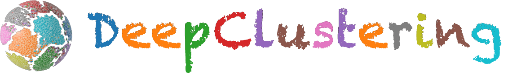

周晟
浙江大学软件学院副教授
团队的研究目标是面向老年人、残疾人的信息障碍问题，构建可靠、可用的智能系统。重点关注结构化数据学习和多模态智能体。
精选论文
Google Scholar- 2026
- 2026
- 2026
- 2026
- 2026
- 2026
- 2026REAL: Resolving Knowledge Conflicts in Knowledge-Intensive Visual Question Answering via Reasoning-Pivot AlignmentICML 2026
- 2026
- 2026ChartAccessMobile: An Intelligent System for Accessible Chart Navigation on Mobile ApplicationsW4A 2026
- 2026Bridging the Semantic Void: A Dual-branch RAG Framework to Enhance GUI Component Description for BVI UsersW4A 2026
- 2026
- 2025
- 2025
- 2025
- 2024
- 2023
- 2022
- 2026
- 2025
- 2025
- 2025
- 2025
- 2025Guarding Graph Neural Networks for Unsupervised Graph Anomaly DetectionIEEE Transactions on Neural Networks and Learning Systems
- 2025
- 2025
- 2025
- 2024
- 2024Making Accessible Movies Easily: An Intelligent Tool for Authoring and Integrating Audio Descriptions to MoviesW4A 2024
- 2025
- 2024
- 2024Structure Enhanced Prototypical Alignment for Unsupervised Cross-domain Node ClassificationNeural Networks
- 2024
- 2024
项目
课程
奖项
- WSDM 2025 Best Paper AwardHow Do Recommendation Models Amplify Popularity Bias? An Analysis from the Spectral Perspective
- W4A 2024 Best Communication Paper CandidateMaking Accessible Movies Easily: An Intelligent Tool for Authoring and Integrating Audio Descriptions to Movies
- ICDM Cup 2022 - 冠军大规模电商图上的风险商品检测
- CIKM Cup 2022 - 冠军联邦异构任务学习
- WWW Competition - 亚军多模态对话系统意图识别挑战赛
- KDD Cup 2022 - 季军亚马逊多分类商品分类与商品副标题识别任务
- WSDM Cup 2022 - 季军跨市场推荐挑战赛
联系
欢迎对多模态学习、智能体和无障碍计算感兴趣的学生与合作者联系我：zhousheng_zju@zju.edu.cn。